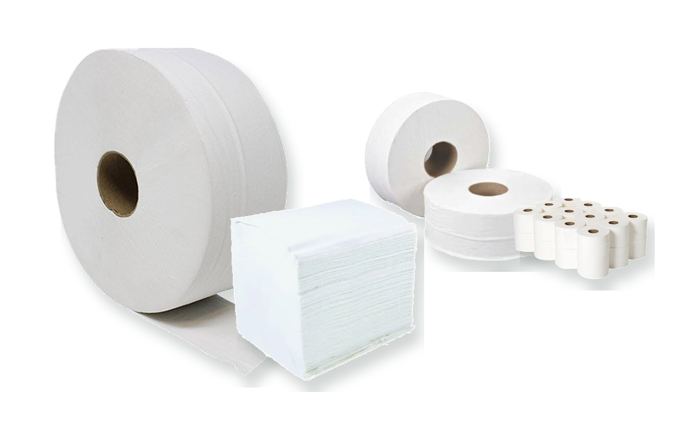

Eloquence · toilet tissue
Luxury Soft
A dependable 2-ply everyday tissue family, available in compact and family-sized packs.
EuroPapers range
Household, washroom and workplace paper products—arranged by brand, with pack sizes and format options kept together.

Complete product catalogue
Every family now has one home. Explore the complete range without jumping between separate consumer and professional listings.
For home
Comfort-led paper products for everyday routines at home.
Eloquence · toilet tissue
A dependable 2-ply everyday tissue family, available in compact and family-sized packs.

Eloquence · toilet tissue
A fuller 3-ply feel, brought together in three clear pack-size choices.
Eloquence · toilet tissue
A premium-feel quilted 3-ply tissue for an elevated everyday option.

SPA · toilet tissue
A 3-ply, 12-roll premium toilet tissue format for a softer everyday finish.

Oakleigh · kitchen towel
A pure 2-ply kitchen towel that works as comfortably in domestic routines as it does in professional kitchens.

Shhh · professional toilet tissue
Three professional case formats when a softer finish matters in shared spaces.
For business
Specified formats for washrooms, hospitality, kitchens, workplaces and industry.


Pro-Active · wipers
Flat-sheet and embossed rolls for clean-up, workshop and food-service use.

Pro-Active · wipers
Robust blue and white rolls for task-led cleaning and industrial routines.

Pro-Tis-U · washroom tissue
Pure tissue options for everyday washroom supply, matched to the right dispenser and refill routine.

Pro-Dri · hand towels
Efficient Z-fold and V-fold choices for a well-stocked, straightforward hand-drying point.

HY-PRO · hygiene rolls
Practical blue and white roll formats for clean-up points throughout the workplace.
Technical detail
For product codes, sheet dimensions, case quantities and pallet information, consult the source catalogue.